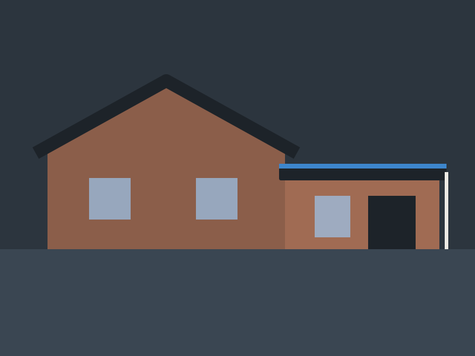
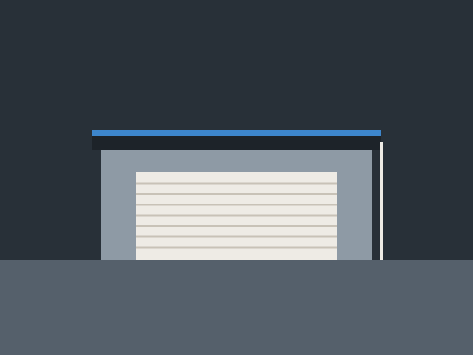

Services · Flat roofs
Flat roofs that stay dry.
Extensions, garages and dormers, re-covered in felt, rubber or fibreglass and properly detailed at the edges.
What we hear
Sound familiar?
- Puddles that sit on the roof for days.
- Bubbles, cracks or splits in the felt.
- A leak that only shows when it rains hard.
- An old roof over an extension that's never been touched.
On the day
What happens
- We check the deck underneath and the falls.
- We strip the old covering.
- We repair or replace any rotten boards.
- We lay the new covering and fit the edge trims.
- We check the outlets and gutters so the water gets away.
Sample jobs
Flat roofs: from the gallery

IllustrationRubber flat roofAccrington · sample
IllustrationGarage flat roofRamsbottom · sampleMade-up sample jobs, with stock photos or illustrations.
Questions
Common questions
Which flat roof material is best?
It depends on the roof. Read flat roof options, or send a photo and we'll recommend one.
How long does a flat roof take?
Most garages and extensions are done in one or two days ${S}.
Can you fix just the leak?
Often, yes. If the rest of the roof is sound, a repair makes sense, and we'll say so.
Send us a photo
Take a couple of photos from the ground and we'll tell you what we think, with a clear quote.